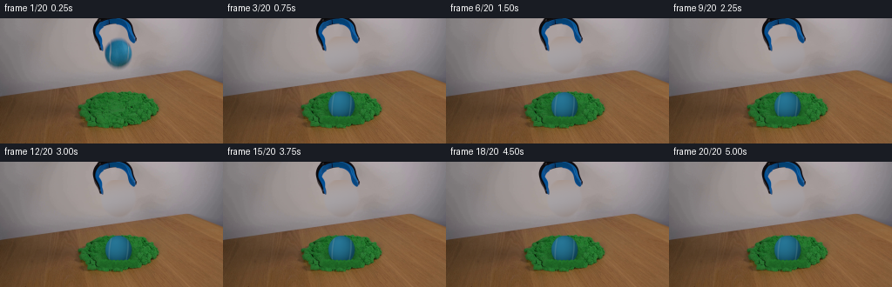
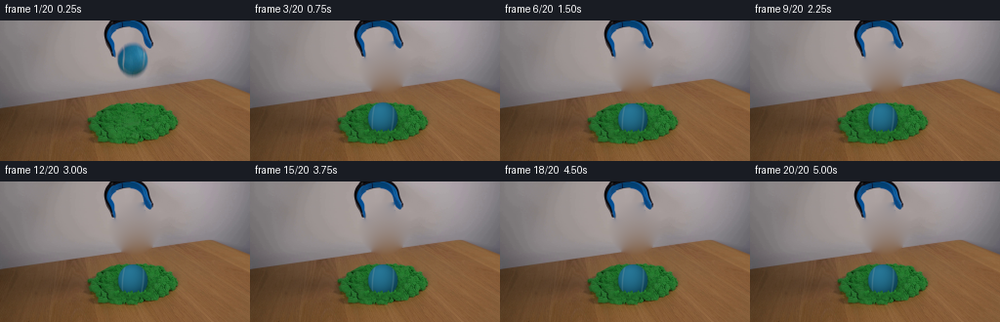
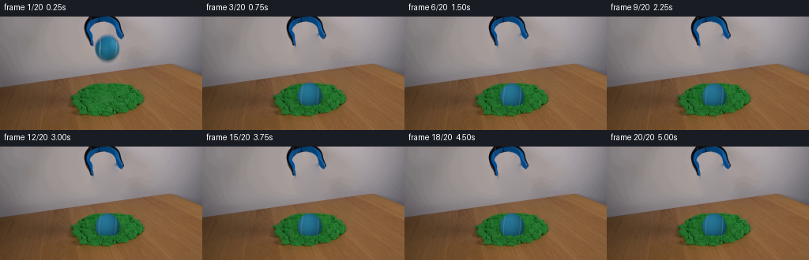
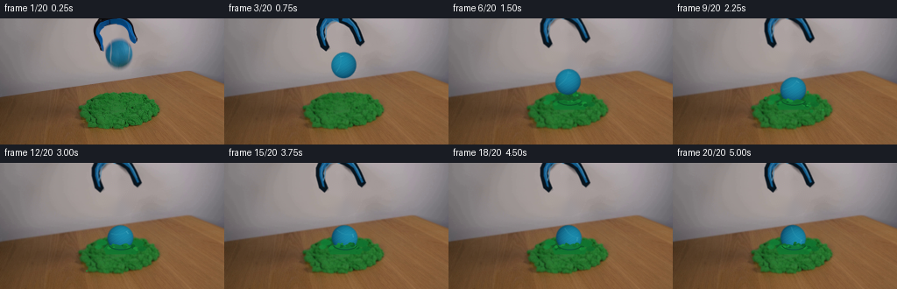
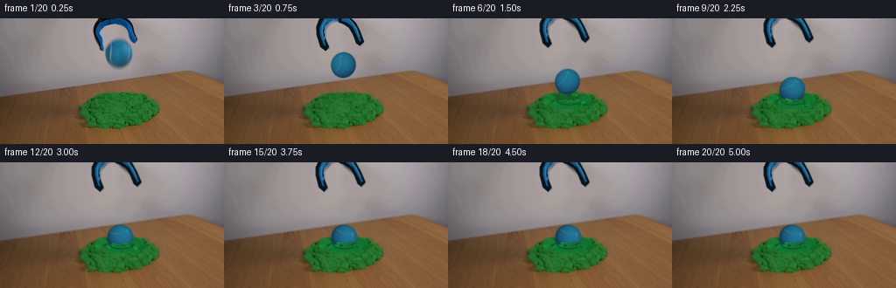

Model Comparison
GPT-6.1-Sol vs GPT-5.6-Sol
同一首帧、同一 prompt、同一 high reasoning、同一 TASK/rules/helper；两个独立 ephemeral cleanroom session 并行运行。点击 Round 按钮可直接播放每一轮冻结候选。
first_frame SHA 相同prompt SHA 相同memory offnetwork tools offsubagent offreview 次数不限
GPT-6.1-Sol
high · 6m16s00 · 0.00s
3稳定候选轮
6生成器执行
15完成命令
0显式 PNG Read
修订重点：墙面圆形色差 → 调和插值；沙沿偏平滑 → 增加颗粒/孔洞；最后限制补洞范围避免桌缘棕色扩散。
GPT-5.6-Sol
high · 5m19s00 · 0.00s
6稳定候选轮
4生成器执行
11完成命令
0显式 PNG Read
修订重点：程序球过饱和 → 首帧颜色校准；终态纹理轻微闪烁 → 冻结第 14 帧后的球纹理、旋转和沙唇随机布局。
真实逐轮 inspection
每张图来自 watcher 当时冻结的候选，不是最终版复制。蓝边为 6.1，橙边为 5.6。

GPT-6.1 · Round 0

GPT-6.1 · Round 1

GPT-6.1 · Round 2 final

GPT-5.6 · Round 0

GPT-5.6 · Round 1

GPT-5.6 · Round 2

GPT-5.6 · Round 3
GPT-5.6 · Round 4

GPT-5.6 · Round 5 final
如何解读
GPT-6.1-Sol
候选轮更少，但每轮改动更集中：背景恢复、沙颗粒、补洞边界三步收敛。最终方法记录更完整，额外生成 contact_review 与 validation。
GPT-5.6-Sol
更快完成，但 watcher 捕获的候选更多；其中部分轮次像素相同而代码/inspection 发生变化。最终主动处理了颜色跳变和终态闪烁。
重要：事件流中两者均没有显式调用 PNG Read 工具查看输出；它们主要依靠初始图片附件、Python/PIL 数值检查和生成的 inspection 产物进行自述式复核。因此本页把“候选迭代”与“有工具证据的多模态回看”区分开，不把后者记为已发生。